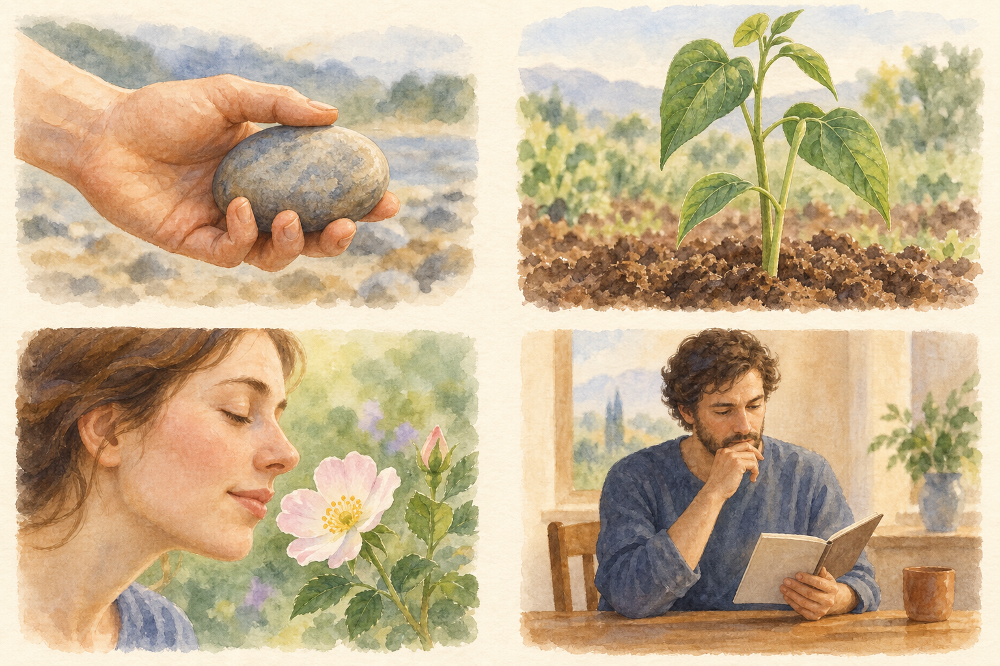

Experiência interior e Eu
Completar a descrição quádrupla distinguindo sensação e individualidade.
Retoma: Matéria e organização viva.
Compreenda a relação
Corpo astral: o que torna um ser capaz de experiência interior? Steiner associa esse membro à sensação, ao prazer, à dor, ao desejo e à capacidade de experiência consciente. A distinção decisiva é entre um processo vivo e a vivência de algo. “Astral” aqui não significa horóscopo. Em Teosofia, a terminologia detalhada distingue aspectos da alma que este esquema quádruplo introdutório não reproduz.
Eu: quem pode assumir uma relação individual com essas experiências? Na concepção de Steiner, o Eu é o centro da individualidade espiritual, capaz de trabalhar sobre os outros membros e transformá-los. É mais que egoísmo ou um rótulo de personalidade. Dizer “sinto raiva, mas vou reconsiderar minha resposta” ilustra a relação consigo mesmo; não demonstra toda a teoria espiritual do Eu.
A sequência importa: primeiro a existência material, depois a organização viva, a experiência interior e a individualidade. Cada passo introduz outra pergunta explicativa. Não são quatro camadas visíveis; qualquer diagrama deles deve ser lido como um mapa de relações.
Quatro perguntas sobre um ser humano

Aquarela original gerada por IA para este curso; não é uma obra de Steiner. As cores são escolhas artísticas.
- Acima à esquerda · Físico: o que dá existência material ao corpo? Pedra e mão destacam o contato material; a mão viva pertence ao ser humano inteiro.
- Acima à direita · Etérico: o que organiza crescimento e forma viva? A planta introduz a questão da vida, para a qual Steiner propõe uma organização formativa suprassensível.
- Abaixo à esquerda · Astral: o que torna um encontro uma experiência interior? Aroma e prazer ilustram a sensação, além do crescimento.
- Abaixo à direita · Eu: quem pode refletir sobre uma experiência e assumir uma posição individual? A reflexão introduz essa pergunta; o caderno é apenas um exemplo didático.
As imagens ilustram perguntas, não corpos etéricos ou astrais visíveis. Os quatro membros pertencem ao conjunto na concepção de Steiner. A observação cotidiana destes exemplos não comprova sua explicação suprassensível.
Fonte e contexto: An Outline of Occult Science · GA 13 · II · Ver imagem em tamanho integral
{kind=link}
Ter uma experiência e posicionar-se diante dela
Fome é experiência; perceber que ela influencia uma decisão acrescenta relação reflexiva. Na descrição quádrupla, o membro astral envolve sensibilidade e desejo; o Eu nomeia o centro individual capaz de trabalhar crescentemente sobre a própria vida. Isso não significa ausência do Eu quando alguém sente intensamente. Trata de como a experiência interior se torna matéria de orientação consciente.
Manas, Budhi e Atma — também chamados Si espiritual, Espírito de vida e Homem-espírito — descrevem transformação proposta das organizações astral, etérica e física pelo Eu. Não são três personalidades extras. Tampouco cada melhora cotidiana significa atingir um desses estados. Aprender a pausar antes de responder exemplifica a relação entre tendência e trabalho sobre ela. O livro amplia essa relação numa concepção espiritual que precisa ser lida em seus próprios termos.
Leitura relacionada: Theosophy · Chapter I · the I and spiritual transformation.
Relacione com a fonte
GA 13 · II · astral member and I
A explicação acima é material original do curso. Para aprofundar, identifique onde a fonte faz a distinção discutida aqui.
Leia a fonte →Uma pergunta para elaborar
Por que a descrição quádrupla distingue o membro astral e o Eu?
Escreva uma resposta breve no caderno antes de compará-la com a explicação.
Compare com uma resposta comentada
O membro astral diz respeito à experiência interior, incluindo sensação e desejo. O Eu diz respeito à individualidade espiritual e sua relação com a experiência. Ter uma sensação e assumir uma posição individual diante dela são perguntas diferentes.